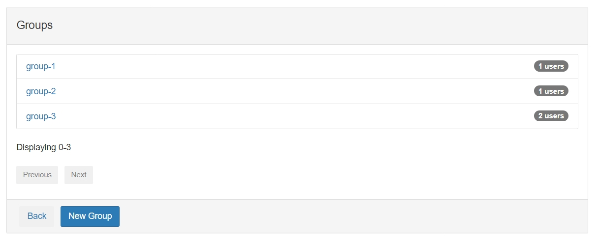
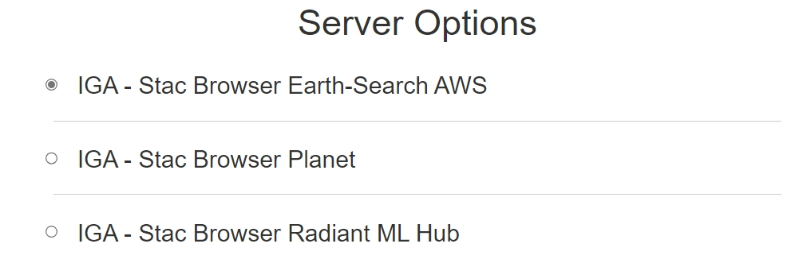
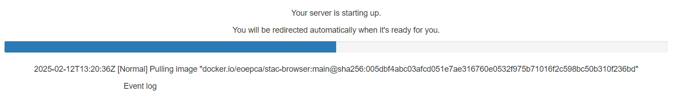

Application Hub Deployment Guide⚓︎
OIDC is currently a requirement for the Application Hub. This is a work in progress and will be updated in the future.
The Application Hub provides a suite of web-based tools—like JupyterLab and Code Server—for interactive analysis and application development on Earth Observation (EO) data. It can also host custom dashboards and interactive web apps
Key Features⚓︎
- JupyterLab for interactive analysis of EO data.
- Code Server for browser-based coding environments.
- Custom Dashboards for specialized visualizations or user-defined apps.
- Multi-User, Multi-Profile environment—users can be grouped, assigned different resource quotas, and use different container images.
Architecture Overview⚓︎
- JupyterHub at the core, spawning user-specific pods.
- OIDC for authentication & authorization.
- Profiles to define CPU/RAM limits, images, volumes, environment variables, etc.
- Group-based Access controlling which profiles are visible to which user groups.
User Scenarios⚓︎
The Application Hub accommodates various user roles and scenarios:
Development Scenario⚓︎
Stakeholders: Service Providers and Developers
Developers access the Application Hub to utilise a software development environment in a Software-as-a-Service (SaaS) model. They can create EO applications using programming languages like Python, R, or Java and leverage libraries such as SNAP and GDAL for processing and analysis. The platform supports:
- Application Packaging: Bundle EO applications with necessary configurations and dependencies.
- Version Control: Integrate with tools like Git for source code management.
- Continuous Integration: Use CI/CD pipelines for automated testing and deployment.
- Collaboration: Share code and resources within teams.
Execution Scenario⚓︎
Stakeholders: End-users (Scientists, Researchers, EO Community Members)
End-users can execute operational applications made available on the platform. They benefit from:
- Data Access: Utilise the platform’s data holdings and data catalog to find compatible datasets.
- Parameter Specification: Input parameters required for application execution.
- Monitoring: Receive real-time updates on processing status, resource consumption estimates, and expected completion times.
- Resource Management: The platform handles resource allocation and scalability for application execution.
Exploratory Analysis⚓︎
Stakeholders: End-users and Developers
Users engage with the Application Hub’s SaaS products designed for in-depth interaction, analysis, and execution of EO applications:
- Interactive Graphical Applications (IGAs): Containerised applications for geospatial data exploration.
- Web Apps and Notebooks: Specialised tools for data analysis and visualisation.
- Customisable Dashboards: Tailored interfaces to meet specific analytical needs.
- In-Environment Execution: Ability to execute new analyses or applications within the same environment.
Prerequisites⚓︎
| Component | Requirement | Documentation Link |
|---|---|---|
| Kubernetes | Cluster (tested on v1.28) | Installation Guide |
| Helm | Version 3.5 or newer | Installation Guide |
| kubectl | Configured for cluster access | Installation Guide |
| APISIX Ingress | Properly installed | Installation Guide |
| TLS Certificates | Managed via cert-manager or manually |
TLS Certificate Management Guide |
| OIDC Provider | An OIDC Provider must be available | Deployment Guide |
Clone the Deployment Guide Repository:
Validate your environment:
Run the validation script to ensure all prerequisites are met:
Deployment⚓︎
- Run the Setup Script:
Key Configuration Parameters:
INGRESS_HOST: Base domain for ingress hosts.- Example:
example.com
- Example:
CLUSTER_ISSUER(if usingcert-manager): Name of the ClusterIssuer.- Example:
letsencrypt-http01-apisix
- Example:
STORAGE_CLASS: Storage class for persistent volumes.- Example:
standard
- Example:
NODE_SELECTOR_KEY: Determine which nodes will run the Application Hub pods.- Example:
kubernetes.io/os - Read more: Node Selector Documentation
- Example:
NODE_SELECTOR_VALUE: Value for the node selector key.- Example:
linux
- Example:
OIDC Configuration:
KEYCLOAK_HOST: OIDC provider base domain. JupyterHub requires an OIDC provider for authentication.- Example:
auth.example.com
- Example:
- Configure OIDC Provider:
To enable Jupyter notebooks and other interactive services to authenticate users, you must integrate the Application Hub with an OIDC identity provider:
Use the create-client.sh script in the /scripts/utils/ directory. This script prompts you for basic details and automatically creates a Keycloak client in your chosen realm:
When prompted:
- Keycloak Admin Username and Password: Enter the credentials of your Keycloak admin user (these are also in
~/.eoepca/stateif you have them set). - Keycloak base domain: e.g.
auth.example.com -
Realm: Typically
eoepca. -
Confidential Client?: specify
trueto create a CONFIDENTIAL client - Client ID:
application-hub. - Client name and description: Provide any helpful text (e.g.,
Application Hub Client). - Client secret: Enter the Client Secret that was generated during the configuration script (check
~/.eoepca/state). - Subdomain: Use
app-hubfor the OAPIP engine. - Additional Subdomains: Leave blank.
- Additional Hosts: Leave blank.
After it completes, you should see a JSON snippet confirming the newly created client.
- Deploy the Application Hub Using Helm
Return to the deployment-guide/scripts/app-hub directory and deploy the Application Hub using Helm:
helm repo add eoepca https://eoepca.github.io/helm-charts
helm repo update eoepca
helm upgrade -i application-hub eoepca/application-hub \
--version 2.1.0 \
--values generated-values.yaml \
--namespace application-hub \
--create-namespace
Deploy the ingress:
- Create an admin user
By default, the Application Hub has a demo admin user named eric. You will need to create this user in Keycloak (or your OIDC provider) to access the Application Hub admin.
When prompted, fill out the general Keycloak authentication details (if not already set) and then:
- Username:
eric - Password: Choose a secure password.
Alternatively you can create this user through the Keycloak admin interface.
- Create Groups in AppHub
Once eric has been created, navigate to the Application Hub admin panel:
-
Log in with the
ericuser. -
Select > Manage Groups and create the following groups with this exact naming:
group-1group-2group-3

- Assign Users to Groups
Individually assign the eric user to each group and hit Apply.

- Select a Profile
Return to the primary Application Hub interface (https://app-hub.${INGRESS_HOST}/) and log in as eric.
You should now see a list of the preconfigured profiles. Select one to spawn an application profile.

- Launch a Profile
Select one of the profiles to launch a profile. You will then be redirected to the relevant tooling environment.

Note: This default setup is primarily for testing or demonstrations. In production, we strongly recommend managing users and groups via Keycloak (or another OIDC provider) and assigning roles accordingly. This ensures a more secure and maintainable approach to user management. For more details, see the Jupyter Hub Documentation section below on configuring additional users, groups, and profiles.
5. Validation⚓︎
5.1 Automated Validation⚓︎
5.2 Manual Validation⚓︎
- Check Kubernetes Resources:
Ensure the JupyterHub pod(s) and other components are in the Running state.
- Access the Hub:
- Go to
https://app-hub.${INGRESS_HOST}/. - You should be redirected to Keycloak (or your chosen OIDC provider) for login if OIDC is set up.
- Upon successful login, you’ll land in the JupyterHub interface (the “spawn” page).
- Spawn a Notebook:
While this Building Block is still in development, the following steps may not work as expected. This section will be updated in the future.
- If you have multiple Profiles, pick one.
- Wait for the container to start. You should end up in a JupyterLab interface.
If something fails (e.g., a 401 from Keycloak or a “profile list is empty” error), review the logs:
6. Advanced Configuration⚓︎
Check the JupyterHub Configuration Reference for more advanced settings and options.
Uninstallation⚓︎
To uninstall the Application Hub and clean up associated resources:
Further Reading⚓︎
- Application Hub Design Document
- EOEPCA+ Helm Charts Repository
- EOEPCA+ Deployment Guide Repository
- JupyterLab Documentation
Feedback⚓︎
If you encounter any issues or have suggestions for improvement, please open an issue on the EOEPCA+Deployment Guide GitHub Repository.